Project 2: Spotlight Lamp
For this project, we were tasked with creating a small, free-standing desk lamp.
This project served as an introduction to new fabrication workflows including CNC routing, soldering, 3D printing, and CAM. These are all techniques I became familiar with and informed the design of my final project following this assignment.
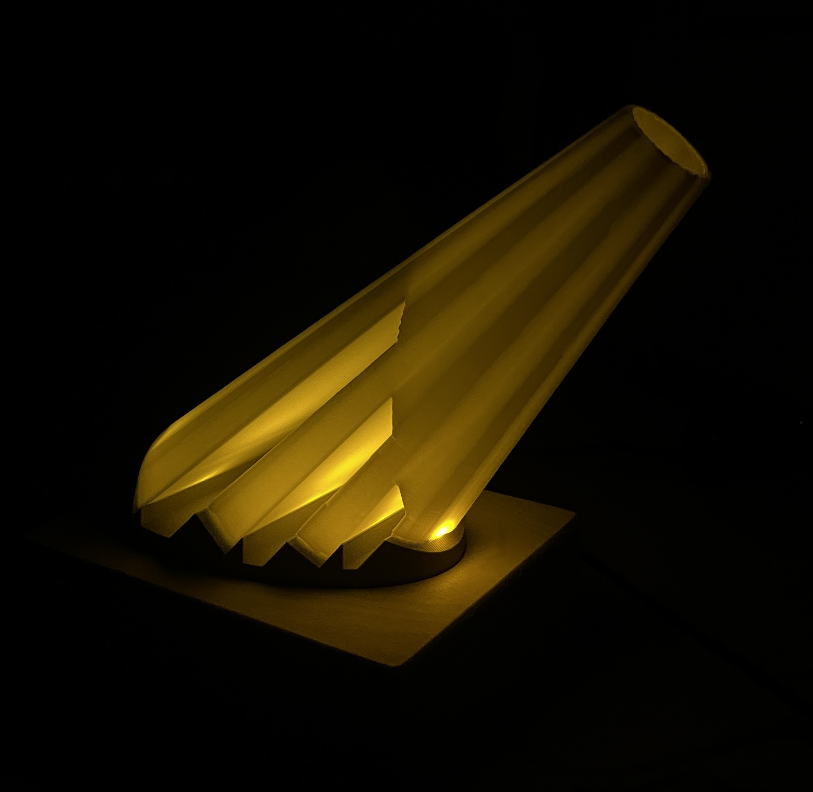
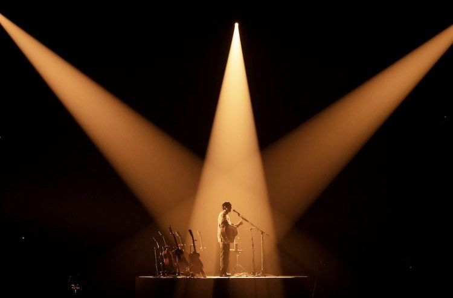
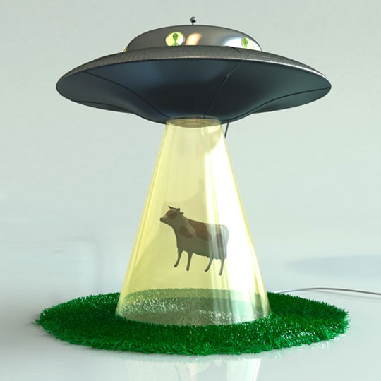
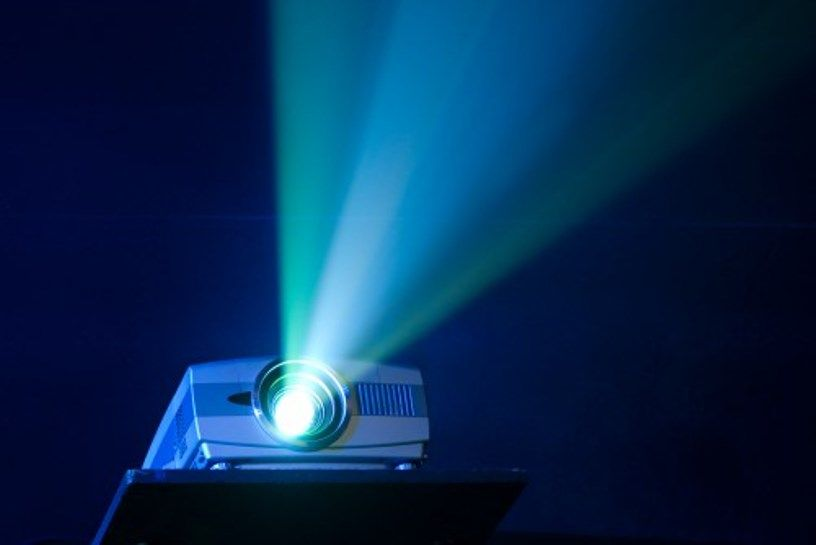
I was inspired by the way light cuts through a dark room —— starting from a narrow orgin and widening into a well defined cone.
The base project example included a 3D print placed on top of a circuit circuit so I wanted to create a "reverse" spotlight effect where the light comes from the widest part of the cone rather than the narrowest. I also wanted to include varying shades within the cone to add depth that imitates real light rays
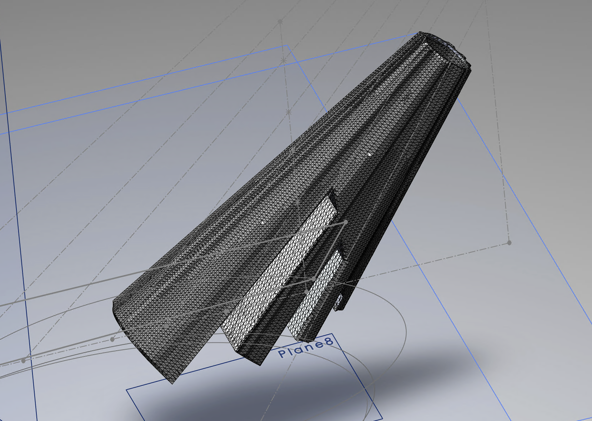
The main component is a 3D print modeled in SOLIDWORKS. I created a lofted surface between two plane projected ellipses.
Adding a surface texture and turning the solid into a shell, the piece varied in thickness around the cone creating the visual of directional beams of light
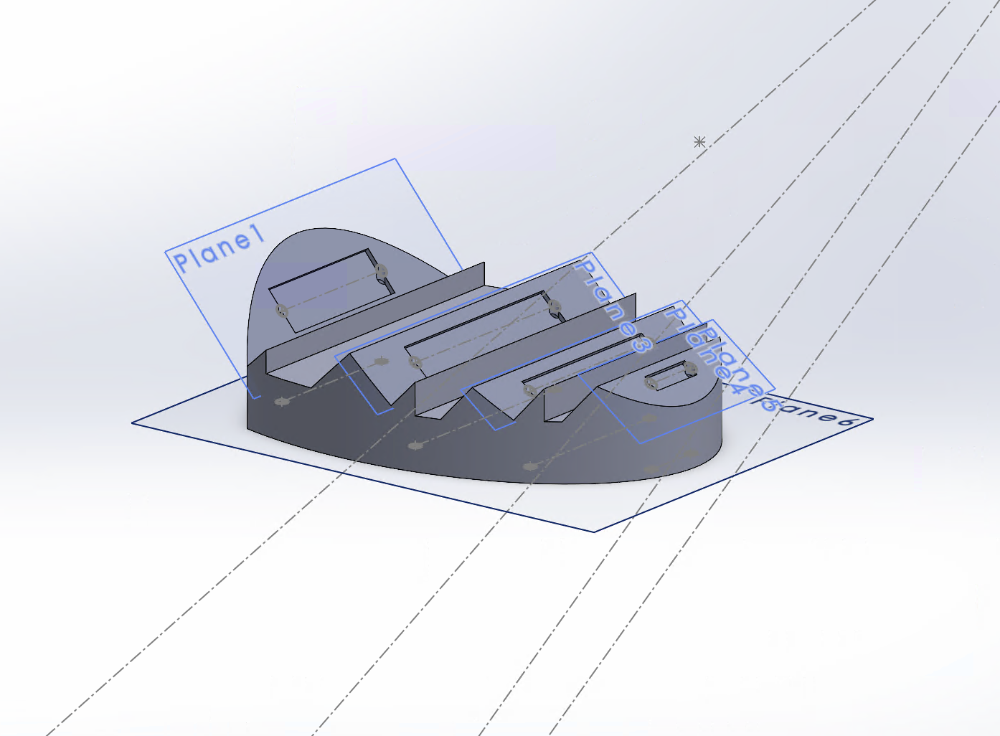
Another 3D printed component held the main light cone in place and housed the circuit boards. The angled surfaces allowed the LEDs to point into the tilted cone rather than normal to the desk surface.
Holes at the edges of the circuit pockets routed wires underneath the stage, allowing for a clean look.
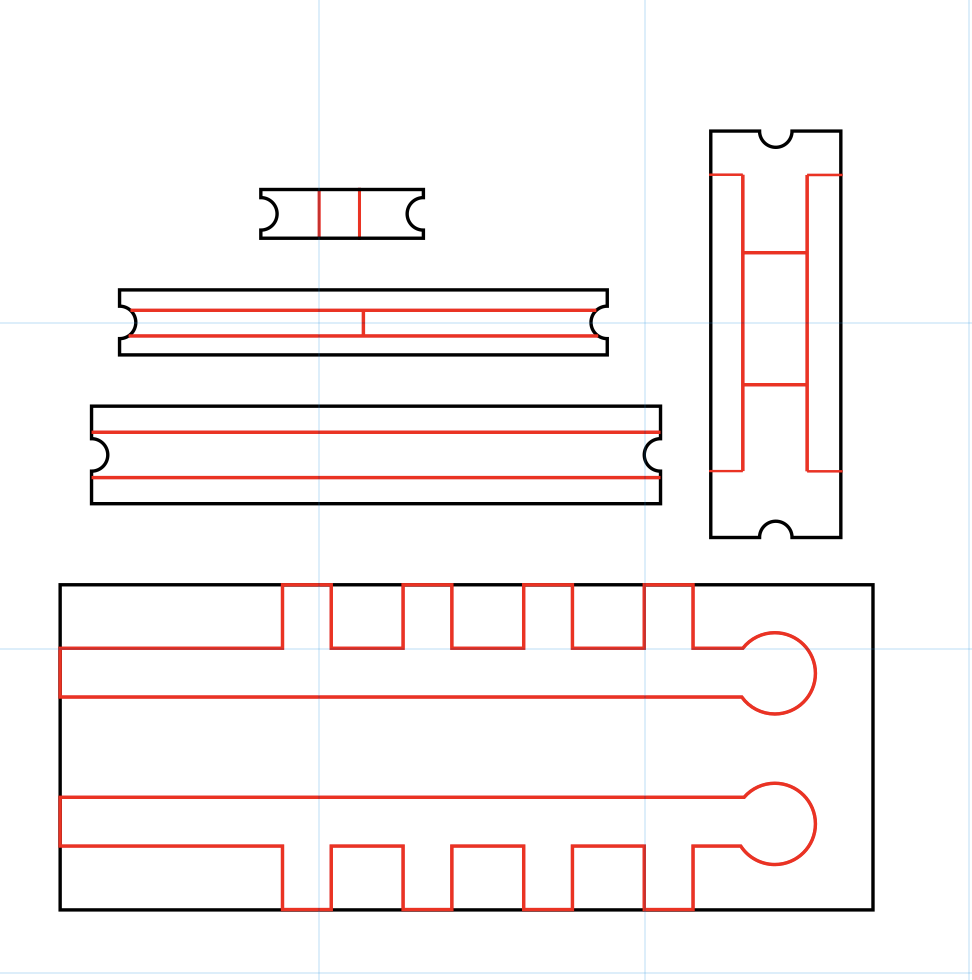
I designed small copper circuits that fit into the pockets of the 3D printed stage.
The largest piece sits between the stage and wooden base, acting as a positive and negative bus for the hidden wires to connect to.
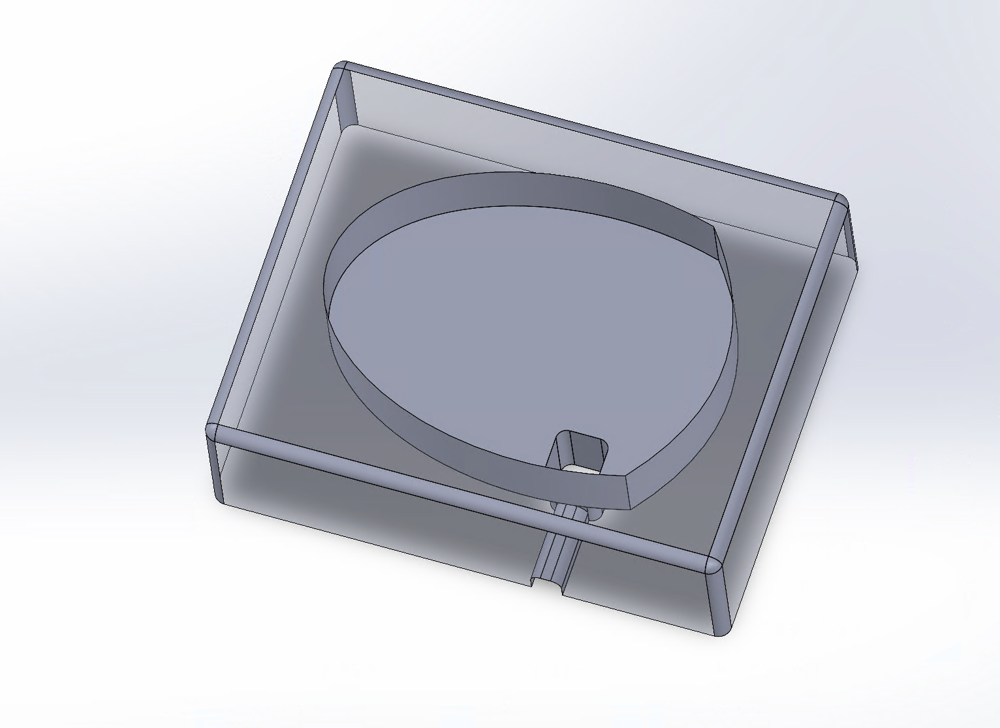
The wooden base holds the stage and circuits. An interior channel hides the primary cord that supplies power to the positive and negative bus.
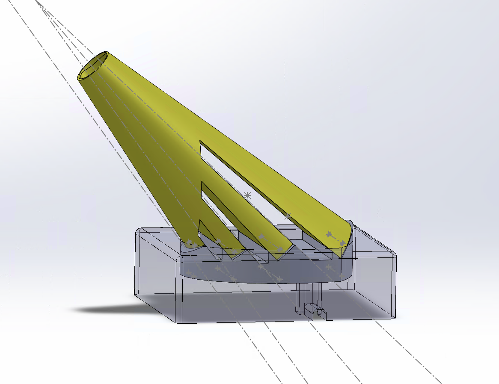
All components and the full assembly were created in Solidworks.
Parts were made "in context" so that they had consistent dimensions and perfectly fit together.
Cone
Stage
Circuit
Wood Base
Assembly
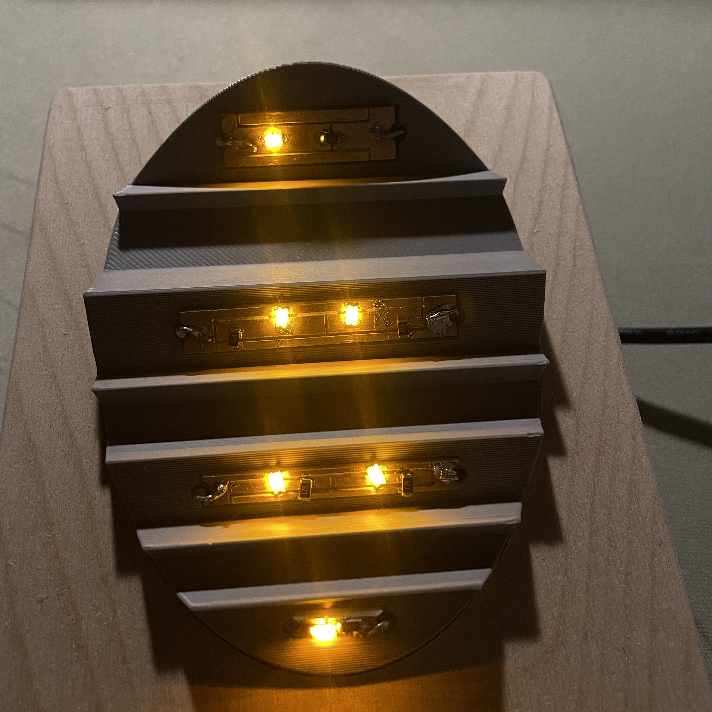
The top circuits featured 1 or 2 LEDs and accompanying resistors in parallel. They were soldered using solder paste and a heat gun.
The bottom circuit connected each top circuit to a positive and negative power supply. Wires routed through the stage were then hand soldered using an iron.
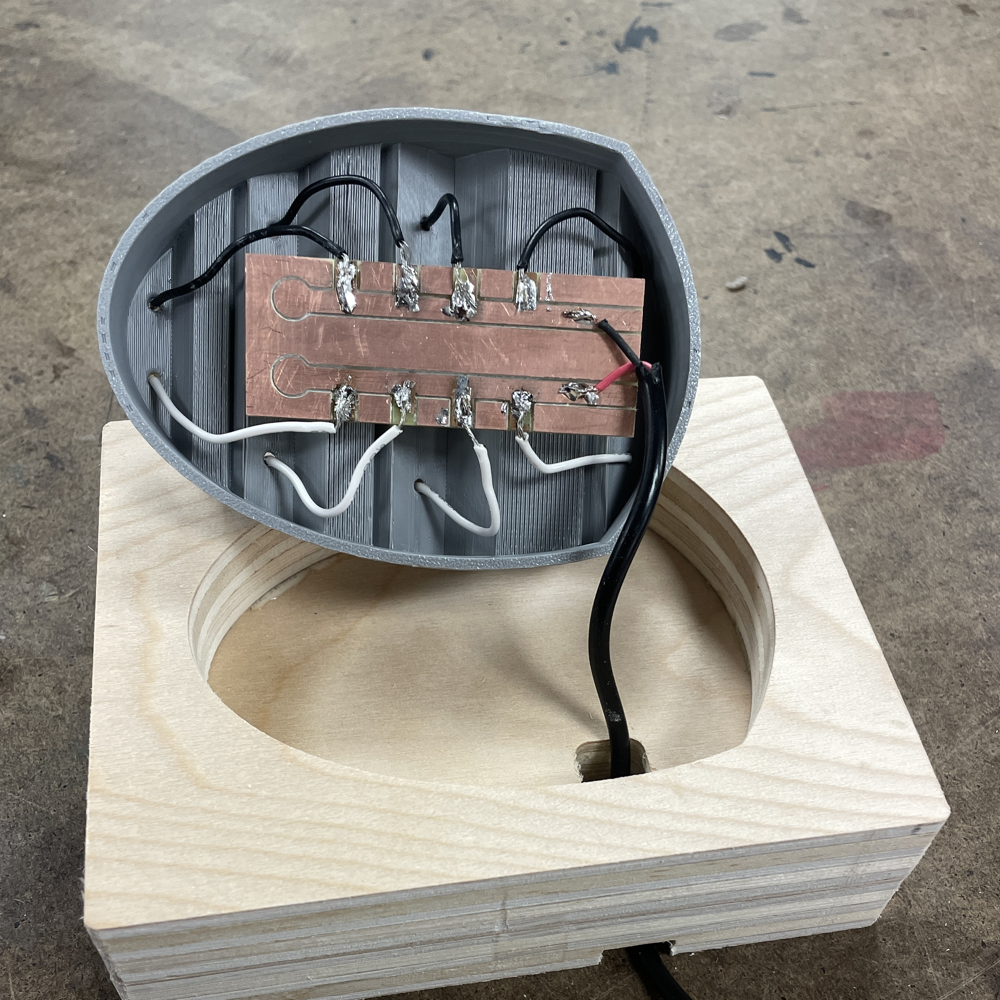
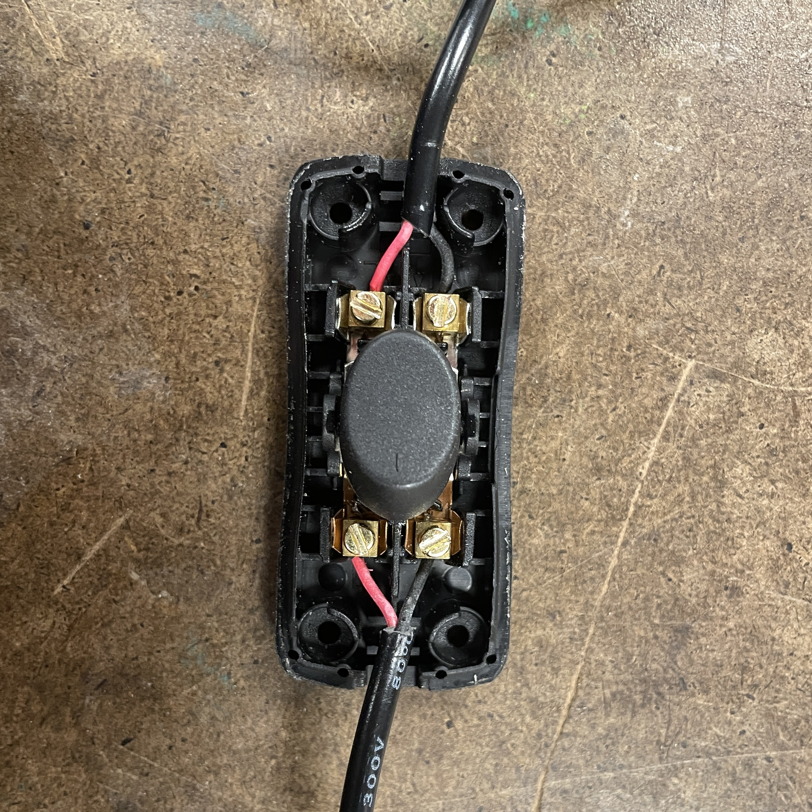
An inline switch was added to the cable connecting the bottom circuit to a 5V wall outlet for easy lighting control.
The finished lamp has a warm yellow glow with directional shading consistent with the design intention. Gaps in the light cone mimic shadows created by obstructions in a spotlight's path. The opening at the narrow point of the cone creates a reverse spotlight that projects onto surfaces its facing.